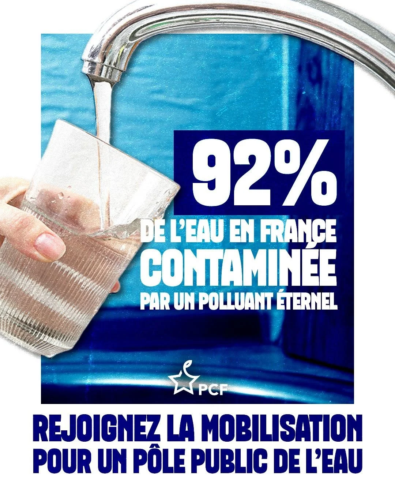

Déclaration nationale
TFA dans l’eau. Le PCF demande un pôle public de l’eau
Date de mise à jour indiquée par Facebook · 5 décembre 2025
Repères éditoriaux
La campagne de mesure de l’Anses a détecté du TFA dans 92 % des prélèvements d’eau distribuée et d’eau brute. Le PCF s’appuie sur ces résultats pour demander une action contre les pollutions et la création d’un pôle public de l’eau.
Texte de la publication · PCF national
92 % de l’eau en France contaminée par un « polluant éternel » (TFA).
L’Anses confirme l’ampleur du scandale : ces PFAS, toxiques et persistants, se retrouvent dans nos rivières, nos nappes et jusque dans l’eau du robinet.
Pendant que l’industrie chimique continue de polluer, le gouvernement tergiverse.
Le PCF exige l’interdiction des PFAS dangereux, la fin de l’impunité des pollueurs et un vrai plan public de dépollution.
Pour rejoindre la mobilisation pour un pôle public de l’eau, portée par le PCF, aimez, partagez et adhérez !

Sources
PCF national · publication relayée par le PCF 79 · bibliothèque Facebook · AR-0002-FB-00938
À lire aussi · Le PCF propose la gratuité des quinze premiers mètres cubes d’eau